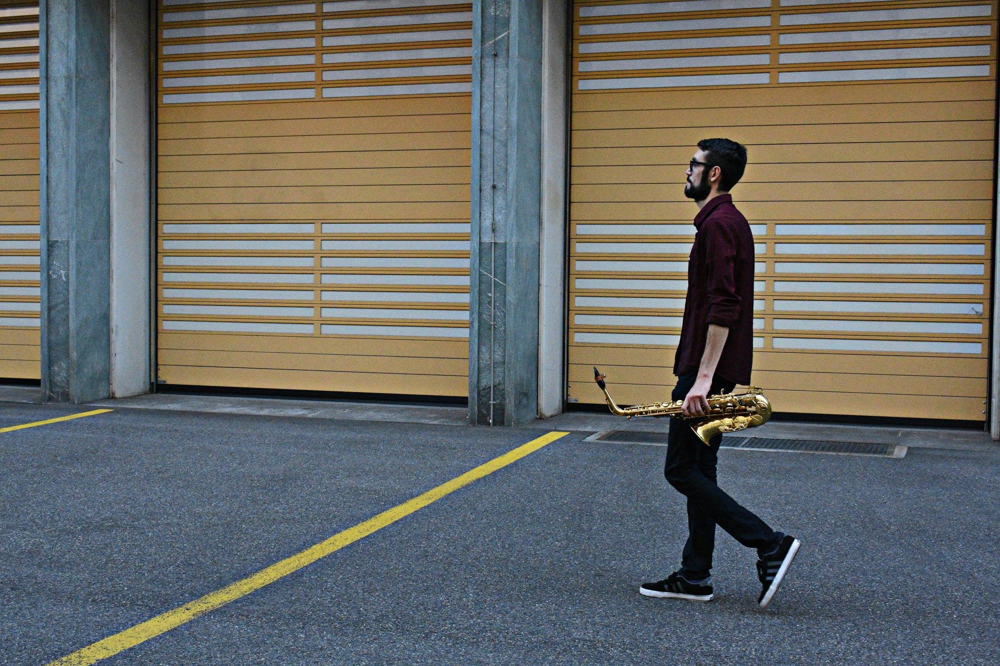

BERA ROMAIRONE

Bera Romairone
Saxophoniste argentine basée en Suisse, Bera est très active et investie dans les domaines de la
création contemporaine et la gestion culturelle. Elle obtient son diplôme de Licenciée en Arts
Musicaux à l’Université National d’Arts à Buenos Aires, et remporte le premier prix du 1er concours
de musique de chambre. Formé par Arno Bornkamp (Pays-Bas), Marie-Bernadette Charrier
(Conservatoire de Bordeaux) et Pierre Stéphane Meugé entre autres, elle est diplômée en Master
Interprétation et Master Pédagogie à l’Haute École de Musique de Lausanne. Titulaire du Prix Páleo
HES-So elle a aussi obtenu le soutien du Mozarteum Argentino, Fond National des Arts (Argentine),
Fondation Irène Dénéréaz (Suisse), Fondation Max Jost (Suisse) et Ibermúsicas entre autres. Elle fait
partie de la plateforme artistique Collège Contemporain (France) et de l'association XOCOLAT (Suisse).
Professeure de saxophone en Suisse, son goût pour l’enseignement et la transmission s’épanouissent
également à travers la dispense de Master Class et Workshops dans des Universités et Conservatoires
Supérieures (Universités des Beaux-Arts de la Plata, Argentine, de Cordoba, Argentine, Conservatoire
d’Athènes, Grèce). Elle participe régulièrement dans des différentes festivals de musique
contemporaine et classique tel que Delian Academy for NewMusic (Grèce), Grachten Festival (Pays Bas),
Darmstädter Ferienkurse (Allemagne), Centre d'expérimentation TaCEC (Argentine) , Conférences Kagel
(Collogne, Allemagne), IGNM (Bern, Suisse), 113 Collective Composers (Etats-Unies) et collabore dans
des projets avec differents ensembles et artistes tel que: Próxima Centauri, Plateforme Container,
Metak-si collective. Elle fait aussi des études en Gestion Culturelle (UsC- Galice). Elle fait partie
des groupes de musique latine en Suisse tel que Maracuyá Orquesta, Los Vacíos de Charly, SousGare Trio,
ainsi que collabore dans nombreaux projets interdisciplinaires entre musique et danse, arts-visuels,
arts de la scène et cinema. Elle est la directrice artistique, fondatrice et saxophoniste de l'ensemble
Awkas et chargée communication à Delian Academy for New Music (Grèce).
ANDRES CASTELLANI

Saxophoniste suisse-argentin, Andrés Castellani commence ses études musicales à Buenos Aires.
Il se perfectionne ensuite avec Marie-Bernardette Charrier à Bordeaux. Il est diplômé d’un Master en Interprétation
à l'Académie Supérieure de Musique de Strasbourg, sous la direction de Philippe Geiss et d’un Master Pédagogie à
la Haute École des Arts de Berne. Attiré depuis toujours par le développement de la musique actuelle et l’expérimentation,
il s’investit dans l’ensemble de musique contemporaine No Input (Paris), l’ensemble Container (Genève), le duo de saxophones
Miradas Cruzadas (Strasbourg), et travaille avec de nombreux compositeurs à la création d’un nouveau répertoire pour son
instrument : Santiago Diez Fischer, Matias Giuliani, Martín Proscia, Roberto Azarreto, Ezequiel Esquenazi (Argentine),
Javier Muñoz (Chili), Tomás Gubistch (France-Argentine), Renaud François (France), Isandro Ojeda-García, Ariadna Alsina (Espagne).
Avec ses projets artistiques, il a organisé des tournées en Argentine, Brésil, Espagne, Italie, Pays-bas, France et Suisse, soutenu
par la Ville de Strasbourg, la HEAR, la Fondation Nestlé pour l’art et Nicati-de Luze. En tant que saxophoniste classique il a
fait des concerts avec l'Orchestre Philharmonique de Strasbourg, l'Orchestre Symphonique de Mulhouse,
l'Orchestre du Théâtre Argentino de La Plata et l'Orchestre Estable du Théâtre Colón.